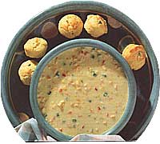
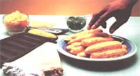

Natural Health
Corn is the ultimate versatile veggie-useful for summer salads and winter chowders.
CORN NOSTALGIA
Most of us have happy memories of munching on steaming' ears of buttered corn.
When I dream about corn on the cob in mid-February, I think about sitting around a checkered, oil-cloth-draped picnic table with my family, chomping away on steamin' ears of corn. With butter dribbling down our chins, we often took 10 minutes to eat a row of corn typewriter-style from one end of the ear to the other. Personality traits manifested themselves in our individual cob-crunching styles: I ate every kernel in each row before moving on to the next; my brothers inhaled their corn at record-breaking speeds, racing to see whose cob pile would become the highest; and my sister munched on her corn haphazardly, leaving large gaps here and there.
A fight would inevitably break out over who'd get to use the last remaining plastic corn-holders, and someone always ended up getting stabbed in the struggle (usually the younger and weaker siblings). Other than that, however, corn consumption was quite pleasurable, as most of you can attest to. And let's face it, who can get all nostalgic when it comes to eggplant or brussel sprouts? Those are childhood memories best forgotten.
Selecting the Perfect Corn
Corn is a high carbohydrate vegetable. The ear itself is actually a grain, while the plant is classified as a grass. One ear of corn is only 70 calories, is high in fiber and a source of vitamins C and A (in yellow corn only). There are over 200 varieties of sweet corn to choose from, ranging in color from yellow to white to a mixture of both.
Fresh corn on the cob needs to be kept cool after it's picked and eaten as soon as possible after harvesting for optimal flavor. Once the corn becomes warm after leaving the corn stalk, the sugar in the kernels begins to convert into starch. So shop early in the morning at a farmer's market or farm stand while the corn is still cool. If it's a long drive back to your home, bring along a cooler. If purchasing corn in the supermarket, make sure the corn is stored in a refrigerated bin. Also, call ahead to ask the produce manager when the corn will be delivered and if it's grown locally.
Husks should be tight and green (never yellow), with moist, white corn silk. Kernels should be plump and tightly packed with the smaller kernels at the tip of the cob. Pop one with your fingernail and a milky juice should squirt out (an older ear will ooze a thick paste). Also look for worms, which leave brownish patches near the top of the ear. Buy only frozen corn during the year; canned corn has lost most of its nutrients and supermarket corn on the cob has traveled long distances and simply isn't fresh.
Storage and Preparation
Keep corn in the husks and in the refrigerator if you plan to use it later the same day. Otherwise, husk and steam the corn immediately for one to two minutes and then bag the whole precooked corn, or cut the corn off the cob and refrigerate it for up to three days. At preparation time, cook the corn as usual, reducing the cooking time slightly.
I love to freeze corn myself because it tastes so much better than commercially frozen corn. I buy four dozen ears at the local farm on Saturdays at 7 a.m. Then I bribe my son into husking them and steam the ears in two large kettles. I cut the corn off the cobs immediately so the kernels don't shrivel and put them in a large bowl to cool thoroughly. Then I spoon them into freezer bags until they're 3/4 full, label and date, and press the bags flat. (Freeze bags of corn lying flat; they can be stored upright after frozen.)
Corn tastes best when not overcooked, so cook until tender but still crisp. If desired, use minimal butter. But if you ask me, fresh corn has enough flavor by itself.
Steam: In a large, covered pot, place a steamer in 1" of water. Put in husked ears and bring water to a boil. Reduce heat; simmer for five minutes until tender. Or turn off the heat early and continue to steam until serving time (up to 20 minutes).
Stir fry: If you're tired of eating corn on the cob, cut it right off and stir fry quickly in a little butter and seasoning. Chop some fresh basil to stir in just before serving.
Grill: Soak unhusked corn in a bucket of cold water for at least 30 minutes. When coals are hot, place the ears on a rack resting directly on the coals. Cook for 15 minutes, turning with the tongs.
Microwave: Leave husks on but pull off some thick outer layers. Microwave for two to three minutes, rotate, and turn corn; microwave for two to three more minutes (the time varies depending on size and maturity of corn; to see if it' s done, peel back the husk and check near the base of the ear.)
Southwestern Corn Chowder
To reduce fat, I use a potato to thicken the soup instead of heavy cream
4 large ears of fresh or 3 cups frozen corn, thawed
1 teaspoon oil or butter
THE TRIP HOME
Fresh corn on the cob needs to be kept cool after it's picked. If you're purchasing some from a farm stand, bring along a cooler for the trip home.
2 large cloves garlic, coarsely chopped
1 small jalapeno pepper, seeded
1 medium onion, chopped into chunks
1 medium potato (3" to 4" in length), peeled and chopped into 1/2" slices
2 cups unsalted chicken broth
1 1/2 cup water
1 1/2 cups low-fat milk
1/2 teaspoon ground cumin
1/2 teaspoon ground coriander
1 teaspoon salt freshly ground pepper
1 teaspoon butter
1 poblano (a long slightly spicy pepper) or small green pepper, diced into small pieces
1 small red pepper, diced into small pieces Optional toppings: chopped cilantro or green onion, or grated Monterey Jack cheese
Husk corn and then roast under broiler for three to five minutes per side or until kernels are brown; check often to make sure it doesn't burn. Cut corn off cobs. If using frozen corn, spread flat on a cookie sheet and put under broiler until golden brown, stirring occasionally to prevent from scorching.
While corn is roasting, sautá garlic, hot pepper, and onion in soup pot until golden. Add potato, chicken broth, and water. Cover and simmer for 15 to 20 minutes until potato slices are tender. Pour into blender and add spices. Heat milk and add to blender. Puree, add two cups of corn, and puree again. Sautá sweet pepper in soup pot for a few minutes and add to soup. Simmer for five more minutes, and then serve with optional toppings.
Corn Pancakes
1 1/2, cups fresh corn kernels (from 3 to 4 ears of corn) or use frozen corn, thawed
1 egg
1 1/2 cups low-fat buttermilk
1 tablespoon butter, melted
1 teaspoon sugar
1 tablespoon maple syrup
1 1/2 cups stone-ground yellow cornmeal
1l4 cups whole-wheat pastry flour (or unbleached white flour)
1 teaspoon baking soda
canola or vegetable oil
optional: two green onions, finely chopped, 1/4 teaspoon cayenne pepper, low-fat sour cream, or yogurt
Cut corn off cobs. In a frying pan, sauté in butter for one to two minutes (no need to cook frozen corn). In blender, mix egg, buttermilk, sugar, and maple syrup. Add cornmeal, flour, and baking soda. Pulse blender a few times until just mixed. Add corn and butter and pulse two or three times.
Heat a little oil in cast-iron skillet, large frying pan, or griddle. Pour out 2 1/2" pancakes onto pan, using medium-high heat. Flip when bubbly on top and golden brown on bottom. Serve with hot maple syrup, low-fat sour cream, or yogurt. If you want to stir in green onions and cayenne pepper before cooking, forgo maple syrup.
Yucatan Salad
Last summer when corn was at its delicious peak, my mother threw together this salad and then asked my 13-year-old son to name it. He thought it tasted somewhat Mexican in flavor, and so named it after Mexico's Yucatan peninsula.
5 large ears of corn, cut off the cobs
1 teaspoon oil
2 pasilla (or poblano) peppers, roasted* and cut into strips
1 red jalapeño pepper, seeded and minced (green is not as colorful)
2 cloves garlic, minced
1/2 red onion, diced into small pieces
1/4 cup Italian parsley, finely chopped
2 tablespoons balsamic vinegar
3 tablespoons fresh basil
salt and freshly ground pepper
Heat teaspoon oil in large cast-iron (or nonstick or regular) skillet on medium high heat. Evenly distribute corn and let cook until brown without stirring. Flip corn over and brown on other side, watching that it doesn't burn. Stir in rest of ingredients, except basil. Adjust salt, pepper, and oil according to taste. Chill or serve immediately. Chop basil and toss in just before serving.
To roast: Cut peppers into quarters lengthwise and remove seeds and stems. Flatten and arrange on aluminum foil with the inside of the pepper facedown. Place in oven or under broiler until blackened. Fold foil into a tight package and leave for at least 10 minutes. Peel off skin.
Corn and Bean Salsa
This salsa makes a nice topping or accompaniment for grilled fish, chicken, or beef.
2 cups fresh corn (about 4 to 5 ears), cutoff the cobs
1 teaspoon oil, canola or corn
1 clove garlic, minced
2 cups canned black beans (16-ounce can), drained and rinsed
1/4 cup red onion, finely chopped
3 green onions, finely chopped
1/2 cup fresh cilantro, chopped (or parsley if cilantro unavailable)
1 teaspoon balsamic vinegar
2 tablespoons canola oil
2 teaspoons lime juice
1 teaspoon ground cumin
1 small jalapeño pepper, seeded and minced (about 1/2 teaspoon), or 1/4 teaspoon ground cayenne pepper. Note: To avoid burning your skin, wear rubber gloves while cutting pepper. salt and freshly ground pepper to taste
2 to 3 ripe, medium-size tomatoes, chopped into 1/2" pieces
In skillet, briefly sauté corn and garlic until corn is cooked but not mushy. Stir in remaining ingredients, except for tomatoes. Chop and add tomatoes just before serving.
Double Corn Muffins
1 cup fresh corn (about 3 ears), cut offcob, or frozen corn*
2 green onions, finely chopped
1 egg
1/4 cup canola or vegetable oil
3/4 cup low-fat milk
2 tablespoons sugar
1/4 teaspoon salt
1 teaspoon curry powder
1/2 cup stone-ground cornmeal
1 1/2 cups whole-wheat pastry flour (or unbleached white), sifted into measuring cups
1 tablespoon baking powder
3/4 cup yellow cheddar cheese, grated
Preheat oven to 400°F Cook corn with one teaspoon of oil in a shallow dish in the microwave or in a skillet until almost done.* Using mixer, beat together egg, oil, milk, sugar, salt, and curry powder. Mix in flours and baking powder. Then stir in 1/2 cup of cheese, green onions, and corn. Pour into paper-lined muffin pan (3/4 full) and top with remaining 1/4 cup grated cheese. Bake for 20 to 25 minutes until they start to turn brown on top. Let cool before serving.
If using frozen corn, thaw, but don't cook. Set aside with green onions.
|
ENVISION Corn is the ultimate versatile veggie-useful for summer salads and winter chowders. |
 |
 |